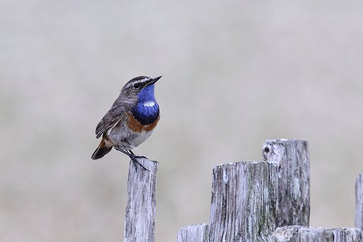

Hello Bootstrap
We will learn to use images using boot strap
Pixabay is a vibrant community of creatives, sharing copyright free images, videos and music.
class img-fluid is used to make the image responsive

class img-thumbnail gives a border to the image - Gives an aesthetic look
class rounded is used to give a round edge radius
class float-right shifts the image to the right of the div
text-center is used to make the image align center